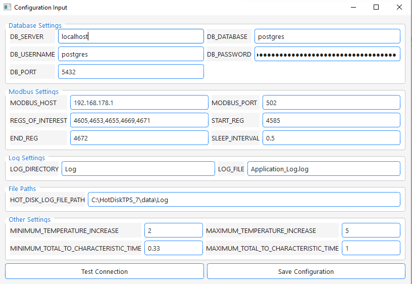

Configuration Creation
Configuration
On first startup of src/main.py or when clicking Config Settings on the view menu of the main window the configuration creator
opens:

-
Database Settings:
- All inputs here can be edited later in the main window by opening the config creator over the view menu.
- First enter your database credentials and password.
-
Modbus Settings:
- Modbus Host (IP address of your device) and Port are needed to connect to the device.
- REGS_OF_INTEREST (comma separated) are the registers the recorder will read from your device. They should (in this order !!) represent the following data columns:
# Register in example picture Column 1 4605 Pressure 2 4653 Sample Temperature 3 4655 Setpoint Sample Temperature 4 4669 Heater Temperature 5 4671 Setpoint Heater Temperature -
Note: For the Jumo DICON touch, data is stored in the selected register and the following register.
-
Conversion happens like: (See Code Block of ModbusReader at bottom of the page. Look at def _read_raw_registers and def _select_interesting )
-
Logging Settings
- Define a folder and file nam to store the application logs. The file name will be extended by date and time
-
Hot Disk Log File Folder
- The application tracks the Hot Disk Thermal Constants Analyzer log file folder to find exported thermal conductivity data as soon as its exported from the Thermal Constants Analyzer Standard folder path is given. Should be the same one for you. Otherwise look in your hotdisk installation where the logs are stored
-
Other Settings
- Enter limiting parameters for valid conductivity measurements. Given by Hot Disk user manual (Can be edited also while recording)
-
Test Connection and Save
- Click test connection. If no errors show up click save configuration.
-
Main Window
- After saving your configuration the necessary database tables should be created automatically and the main window should open"

- Nice. Everything works.
- To start a test continue with Start New Test
- After saving your configuration the necessary database tables should be created automatically and the main window should open"
recorder_app.infrastructure.handler.modbus_handler.ModbusReader
Reads from a Modbus device, converts to floats, timestamps, and filters invalid values.
Source code in src\recorder_app\infrastructure\handler\modbus_handler.py
174 175 176 177 178 179 180 181 182 183 184 185 186 187 188 189 190 191 192 193 194 195 196 197 198 199 200 201 202 203 204 205 206 207 208 209 210 211 212 213 214 215 216 217 218 219 220 221 222 223 224 225 226 227 228 229 230 231 232 233 234 235 236 237 238 239 240 241 242 | |